Role: Product Designer
Timeline: 6 months
Team: 2 Designers, 9 Engineers, 1 Product Manager
The Shoe Project (TSP) is a non-organization dedicated to providing educational opportunities in speaking, writing, and leadership to immigrant and refugee women. Their mission is to educate the public on the challenges faced by these women, using their shoes as a metaphor for their journey in their stories. UW Blueprint is a student run organization that builds technology with social impact.
UW Blueprint built a platform for the Shoe Project to showcase their portfolio of 250+ stories to raise awareness and demonstrate the impact of TSP’s work.
Their original method of displaying the stories through a static webpage didn’t evoke a strong sense of empathy, awareness, or community for immigrant and refugee women. Additionally, TSP has various chapters across Canada but they all feel disconnected from one another. The impact of the organization is viewed chapter by chapter rather than as a whole. This makes it difficult for TSP to showcase the impact of their work and increase their marketing and sponsorship efforts.
How might we tie all the work done by each TSP chapter across Canada together and display it holistically to better showcase the impact of the organization and build a stronger sense of community for immigrant & refugee women?
An interactive visualization of stories written by immigrant women that can be maintained and updated by TSP.
Working closely with the PM and NPO, we realized that there would be two parts to the product for two different users:
Through research and interviews with users and stakeholders, we gathered some considerations to keep in mind.
Key findings — General user reading stories:
Key findings — TSP admin managing stories:
We were fortunate to have worked with an extremely responsive and helpful client, enabling us to have constant access to users (especially when the client was also our user). Due to that relationship, we got to test and validate designs early and often.
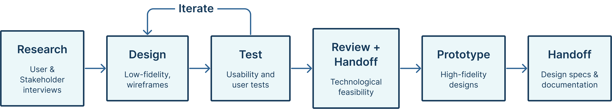The process for this project
We followed a “hot potato” process when handing off designs for development. Instead of handing off designs all at the end, we had various touchpoints with engineers to avoid a design bottleneck and ensure technical feasibility.
This is the general public facing portion of the platform where anyone can come to read the stories. The platform that UW Blueprint built to host stories links directly from TSP’s main website.
When we were first presented with TSP’s problem, we wanted to find a way to display the stories that builds a sense of community for the immigrant and refugee women of Canada. Each pin on the map represents a story and is placed in the Canadian city that the woman immigrated to.
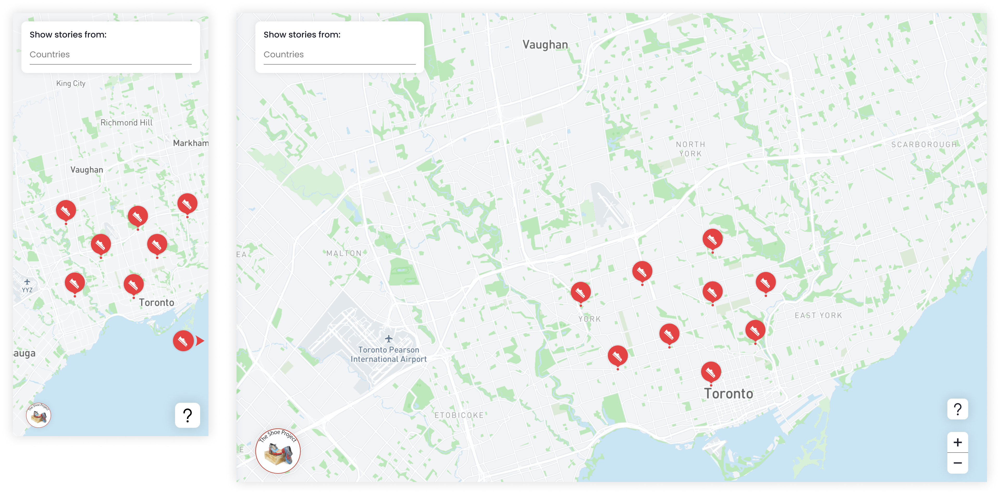Map concept on mweb and web
Additionally, the map sorts the stories into the Canadian cities that the women immigrated to. During user interviews, users noted that they’re more interested in the stories of women from their community. In map format, users can easily find the stories that are relevant to them by moving the map to their city of interest.
At first, we thought of a simple static page where stories can be read, such as Medium. Or, something a little more interesting such as a blog format like Tumblr. However, we realized that those formats of browsing the stories do little to build empathy or community.
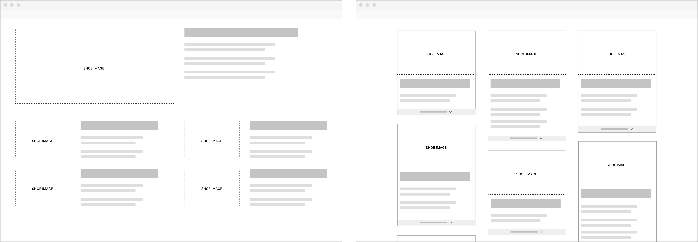Left: Article concept. Right: Blog concept.
To validate our decisions, we met with our stakeholders as well as members of the TSP community and presented the three concepts to them. Majority of surveyed participants felt that it was much more impactful to see the clusters of pins scattered across the map of Canada. It successfully builds empathy by visually illustrating the community of women. Stakeholders said that it was powerful to see just how many of these immigrant and refugee women walk among us.
Users can zoom in and out on the map and drag the map around to navigate. As users zoom in, the pins will expand to show more pins. In case users wind up on a part of the map where there aren’t any stories, a redirect pin that points users to the nearest city with stories will appear. Clicking on the redirect pin will reposition users to where there are stories.
Redirct pin brings users to the nearest cluster of stories
This feature was implemented to mitigate any frustrations if users got “lost”. Given that stories get swapped out regularly and Canada is a big country, there’s a chance that users may wind up somewhere without stories by accident.
Users can filter stories by which country the story originates from (the country that the woman left). Since readers indicated during user interviews that they may be more interested in stories from specific countries, this allows them to easily find those stories.
A search select interaction was implemented for two use cases:
Search select interaction
On mobile, we explored having all countries visible at the top (exploration A) but then realized that horizontal scrolling is an unnatural motion on mobile and that there could be many different countries, making it hard to find a specific one. In exploration B, we had filter hidden in L2 before we realized that we had more screen real estate that could be better utilized.
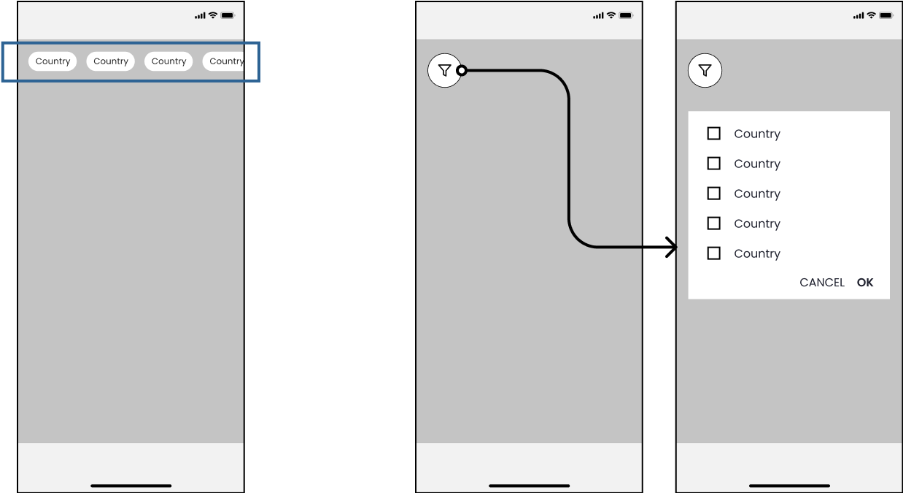Left: Exploration A (chips). Right: Exploration B (hidden in L2).
On desktop, we explored different concepts given that we had more screen real estate on desktop. Exploration A was quickly ruled out because we didn’t have content to populate the left rail. We also tried grouping the countries to lessen cognitive load in exploration B but there was no way to know for certain what stories from which countries would be displayed, resulting in potentially some categories being empty.
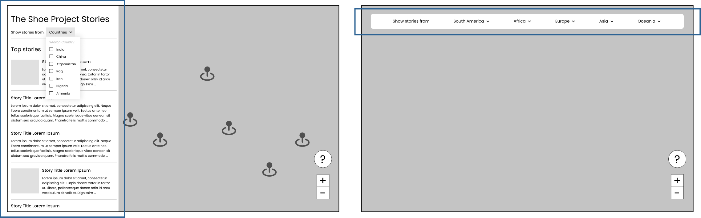Left: Exploration A (left rail). Right: Exploration B (categories)
Chips are used to keep users informed of their filter selections. Users can easily remove one filter at a time or clear all filters. Banners indicating each story’s origin appear above each pin when two or more filters are selected to help users separate out which story comes from which country.
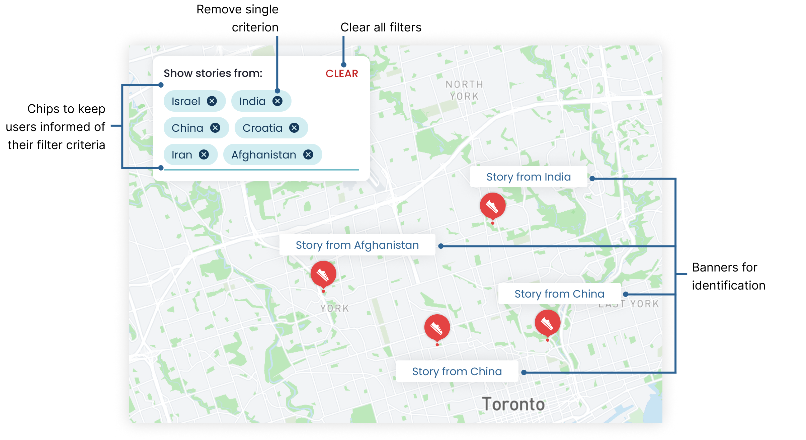Close up of filter + banners
The banners only appear if the users are zoomed in enough to see each individual pin. Each time a new filter criterion is selected, the map will be zoomed out fully (to see the entire country) so that users can see where pins remain after the filter is applied.
As the main purpose of this website, users can read the stories written by immigrant and refugee women.
Before committing to reading a story, users can preview what the story is about. A snippet or synopsis of the story is shown to hook in a reader along with some additional story details and a clear CTA to encourage users to read the full story.

Story preview on mweb and web
We tested various card layouts and interactions. To close out of the preview in the first iteration of the preview card, users could swipe down on mobile and click outside the card on desktop. However, during usability testing, users weren’t confident on how to exit out of the preview, especially on mobile, and it wasn’t clear to them that clicking the preview card would open the full story.
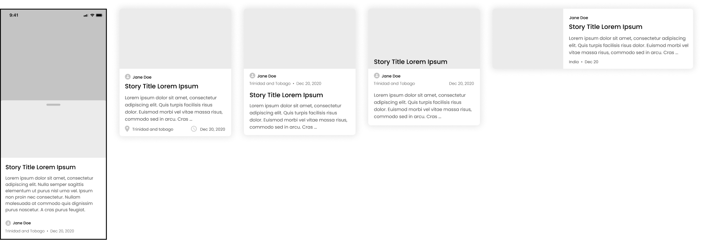Preview card explorations
To mitigate those usability problems, we added clear affordance to close the preview and to read the full story on top of the initial interactions.
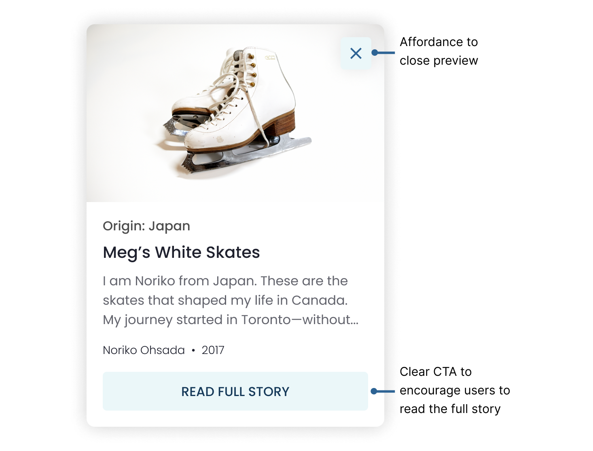Close up of the final story preview card
The full story slides in from the right (on desktop) for three reasons:
Full story drawer (on desktop)
At the bottom of each story, similar stories (ie. other stories from the same author, stories from the same country/region, etc.) will be recommended to the user. This is to encourage users to continue to read more stories, especially if they enjoyed the story they just read.
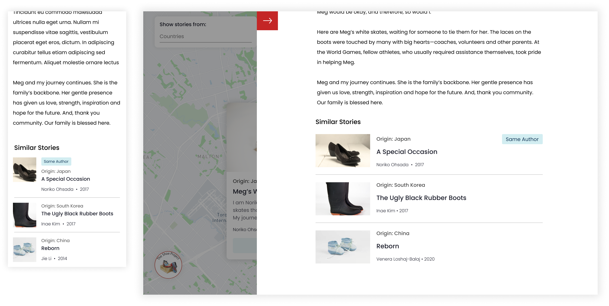Recommended stories on mweb and web
The admin dashboard is where TSP can manage the stories that are being displayed. TSP uses this to swap out the stories that are being displayed on the map; they’ll switch up the stories once every few weeks. They can preview how the map will look before they publish it.
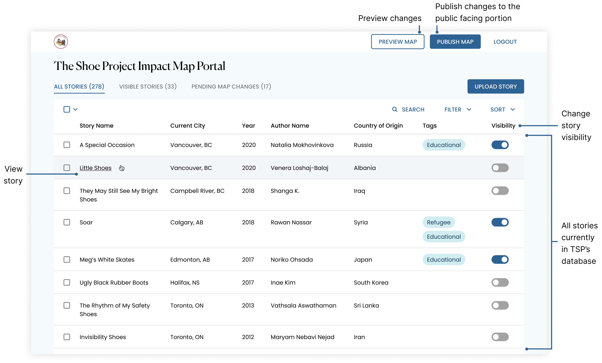TSP admin dashboard
The dashboard has three different views. The first is a general overview of all the stories that have been uploaded to the portal. TSP would use this view to see what stories are in their database that they can showcase.
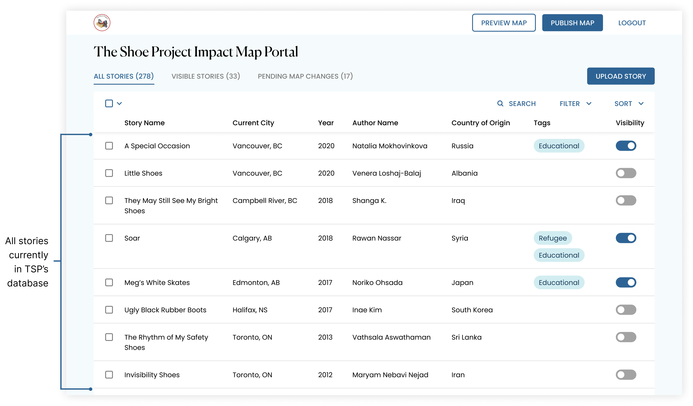All stories
The second is a view of all the stories that are toggled to be visible on the map. This view helps confirm to TSP which stories will be showcased if they were to publish changes at that moment.
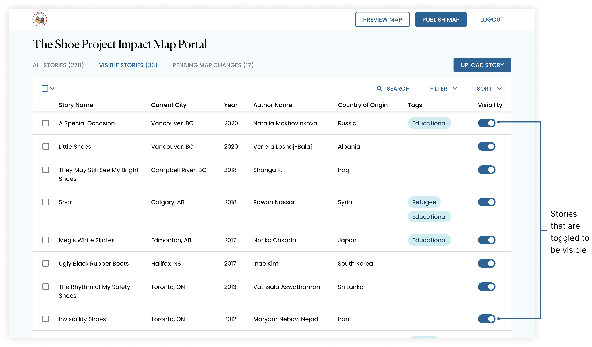Visible stories
The final view is a log of what changes were made since the last time changes were published. It shows the user which stories were removed from the showcase and which ones were added. This reassures TSP that all the changes were intentional and helps them keep track of all the changes that were made.
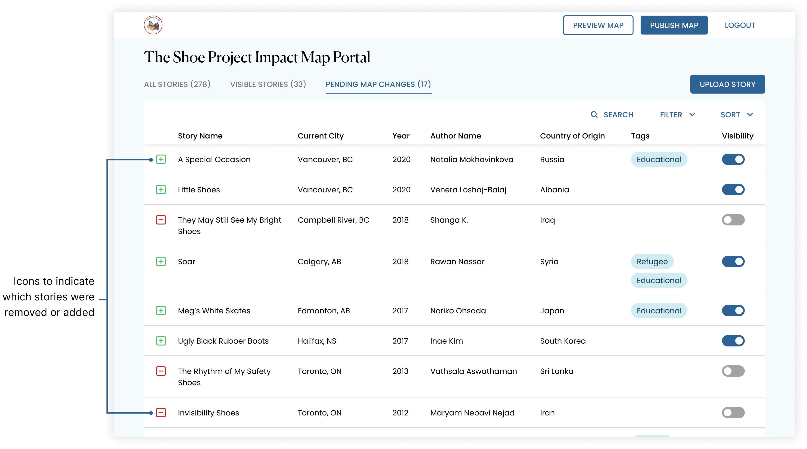Pending changes (change log)
To date, TSP has more than 250+ stories written across multiple TSP chapters. It’s hard for TSP personnel to keep track of all the stories so they need an easy and intuitive way to parse through all the stories.
If TSP is looking for a specific story, they can search for it by story title, author name, date, Canadian city, or country of origin.
Searching stories
TSP can also tag stories by theme (ie. refugee, inspirational, educational, etc.) and filter by those tags.
Filtering stories by tags
TSP can also sort all 250+ stories by multiple fields and determine in what order the sort will be applied (ie. by year, and within each year, by author alphabetically, etc.)
Sorting 250+ stories
Users can also easily rearrange the order in which sort is applied by dragging the fields around. They even have the option to sort and filter each view independently of the others.
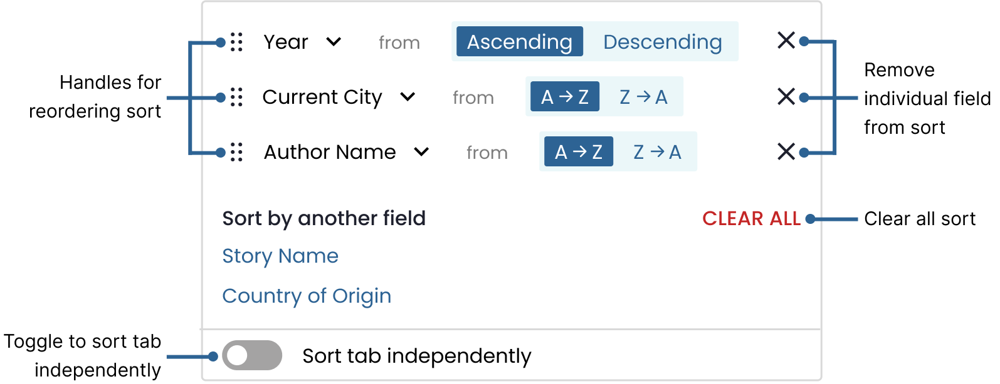A closer look at sort
In the first iteration, we followed a pattern used by spreadsheet software where clicking on a column header would apply sort. However, during usability testing, users couldn’t figure out how to sort the stories because there was no clear affordance.
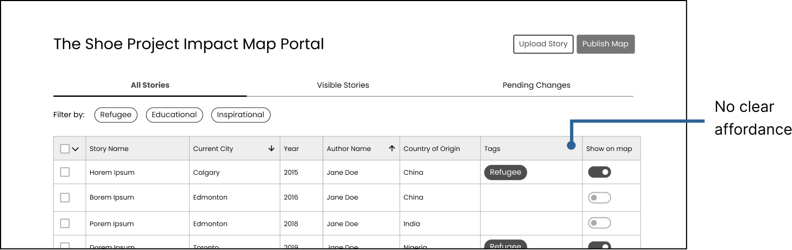Sort iteration 1
In the second iteration, we added a chevron as an affordance. While users were able to figure out how to sort the stories during usability testing, we realized that there wasn’t a clear way to indicate to users that a sort had been applied nor in what order fields were being sorted by.
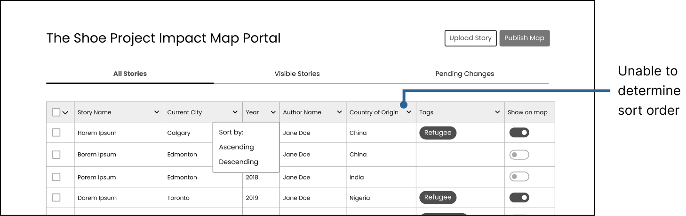Sort iteration 2
The final iteration is intuitive in how to apply sort as well as understanding and re-arranging the order in which sort is being applied. Users are even able to reverse sort.
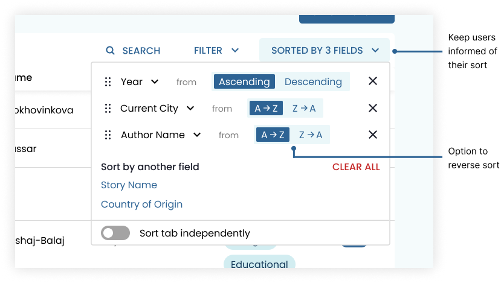Final design for sort
TSP has 30-50 stories displayed at a time and they usually switch out all the stories at once. It would be tedious to manually click to hide 50 stories individually so we implemented a feature to target either just visible stories, hidden stories, or all stories. That way, users can select all visible stories at once and hide them with one click.
Multi-select interaction
To reassure users that an action did happen, feedback is always offered.
Snackbar for feedback, with option to undo action
In case of errors, users are given the chance to correct them easily with an “undo” button that accompanies the feedback.
TSP is still hosting writing workshops to continuously help women write stories. These newly written stories get uploaded to the database so that they can be showcased. Each woman is paired with a TSP writing mentor who then uploads the story by filling out a form on the dashboard with the story’s details after the story is finished.
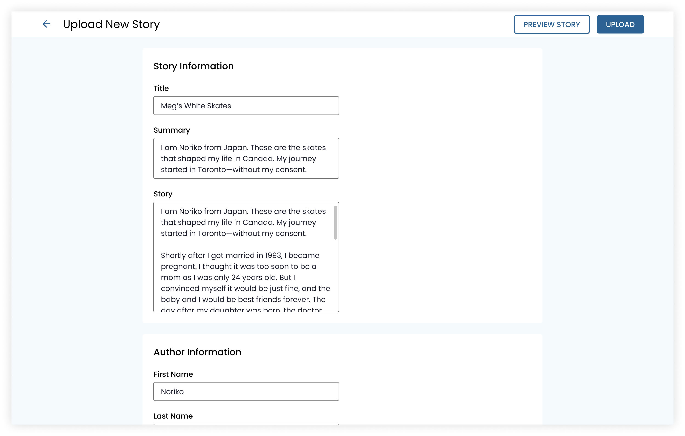Upload new story
Tagging stories helps TSP keep track of each stories moral and/or theme. TSP can select from a list of existing tags or create a new one simply by typing and hitting enter.
Select existing tag and type to create new tag
Another concept that we explored was having a clear CTA to create a new tag.
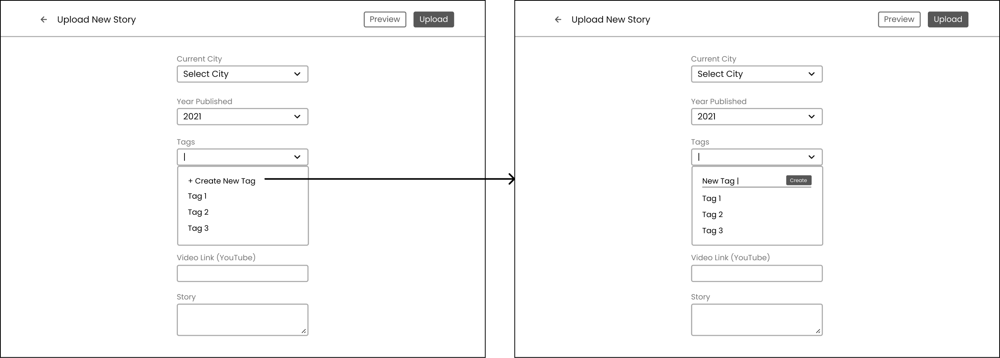Tag creation interaction iteration 1
During A/B testing, we found that the majority of users preferred to just type to create as it saves them one less click. They felt it was intuitive and usable, especially with the helper text.
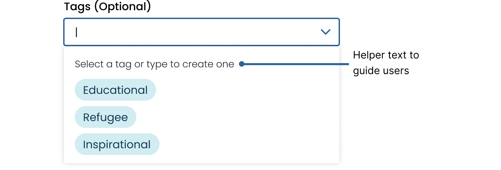A closer view at creating a new tag
To delete a tag, users can hover over it and use the kebab to access advanced actions. Before deleting the tag, a modal pops up asking the user to confirm their actions and informs them of the consequence of the destructive action by telling them how many stories will be affected.
Warning for destructive actions
Working so closely with engineers pushed me to think of all the little details, from edge cases to states to interaction design. A design system really helped as a tool of communication and source of truth.
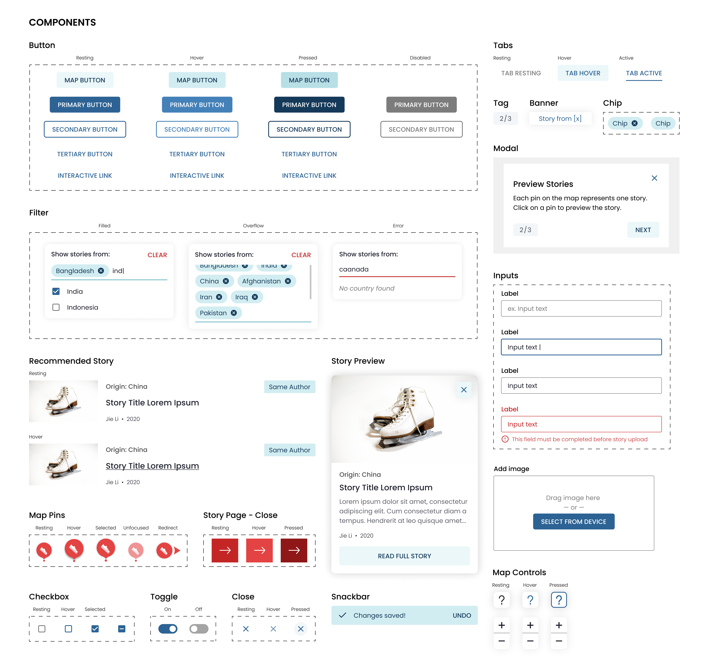Design system for this project
Shipped! 🚀 This project is live at map.theshoeproject.online
This project launched April 2021 and the Shoe Project has been using it to showcase the impact of their work ever since. I’m super proud of the work that the team put into this; some of my favourite and proudest moments were from this team.
We were fortunate to have been able to meet with users every week (if necessary) so we were able to test our designs and validate designs early on in the design process. Once we had an idea, we’d whip up a scrappy (but not crappy) wireframe and test it with users. Every design and decision that we moved into high-fidelity was validated and we never had to waste any time or work. Because of this, we were also able to always stay at least 1-2 sprints ahead of development.
For this project, I mentored and worked with a junior designer. This partnership really tested my communication skills and knowledge of best design practices. It’s one thing to know and apply practices, it’s another to explain it to someone else. I also learned how to adjust my feedback style for different audiences and how to delegate design work. It really gave me a huge sense of fulfillment and pride to watch them learn and grow as a designer, knowing that I played a part in their growth.
Every time I work with engineers, they never fail to catch the little details that I missed, such as edge cases, different states, and interactions. They elevate our design system to be more than just a library of components to make designing faster; it becomes a tool of communication. Engineers constantly challenge me by asking “but what about when [x] happens”. By working with engineers, I always come out a better interaction designer.
This project helped me realize just how big of a difference copy makes in user experience. I found myself spending a lot of time testing out different words to use in my designs. There were also some challenges regarding designing around content that isn’t constant. For example, we had to ensure that our designs were flexible enough to accommodate short names and long names. After this project, I have a newfound appreciation for content strategists.
Want to read more about this project and our team? Check out this blog post!